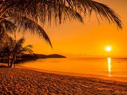
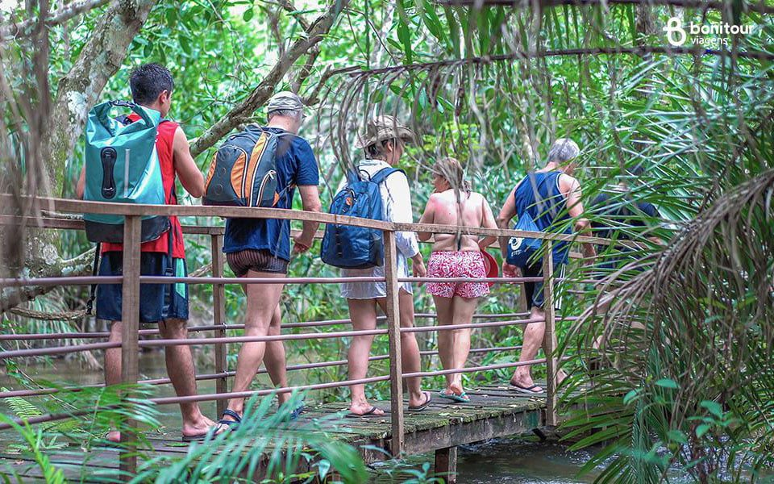

Nossa História e Compromisso
A Brasil Encantado nasceu do desejo de conectar viajantes às raízes mais profundas do nosso país. Com mais de duas décadas de experiência no setor de turismo receptivo e emissivo, nossa equipe é formada por apaixonados pela diversidade cultural e geográfica do Brasil.
Diferente de agências convencionais, nós focamos no turismo de experiência. Isso significa que não vendemos apenas passagens, mas sim memórias. Nossos roteiros são cuidadosamente testados por especialistas locais, garantindo que cada parada, cada hotel e cada restaurante cumpra os mais rigorosos padrões de qualidade e segurança.

Nossa sede em Piracicaba serve como ponto central para o planejamento de expedições que abrangem desde as dunas dos Lençóis Maranhenses até os cânions gelados do Rio Grande do Sul. Acreditamos que viajar é a melhor forma de educação, e por isso incluímos contextos históricos em todos os nossos materiais informativos.
Por que escolher o Brasil?
O Brasil é detentor da maior biodiversidade do planeta. Do Pantanal à Amazônia, oferecemos safáris fotográficos que colocam você frente a frente com a fauna silvestre de forma ética e sustentável. Além disso, nossa costa de mais de 7 mil quilômetros abriga algumas das praias mais bonitas do mundo.

Turismo de Sol
As melhores praias do Nordeste com infraestrutura de luxo.

Ecoturismo
Trilhas e cachoeiras preservadas com guias biólogos.
Depoimentos de Viajantes
"A viagem para Fernando de Noronha organizada pela Brasil Encantado foi perfeita em cada detalhe. O suporte 24h fez toda a diferença quando precisamos mudar o horário de um passeio." - Mariana Silva
"O roteiro gastronômico por Minas Gerais superou todas as expectativas. Conhecemos fazendas de queijo que não aparecem em guias comuns." - João Pedro